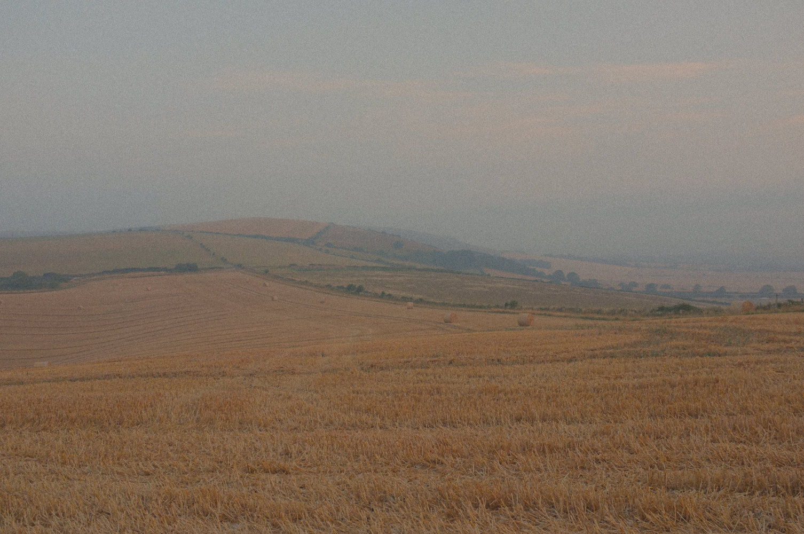
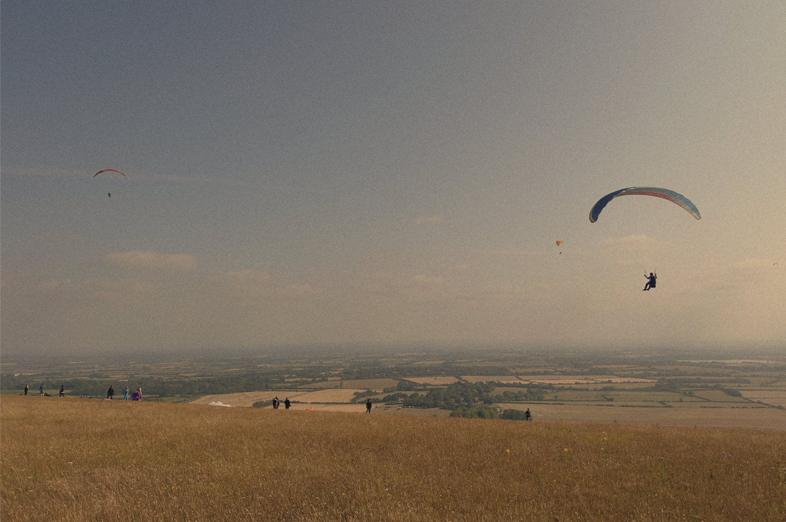
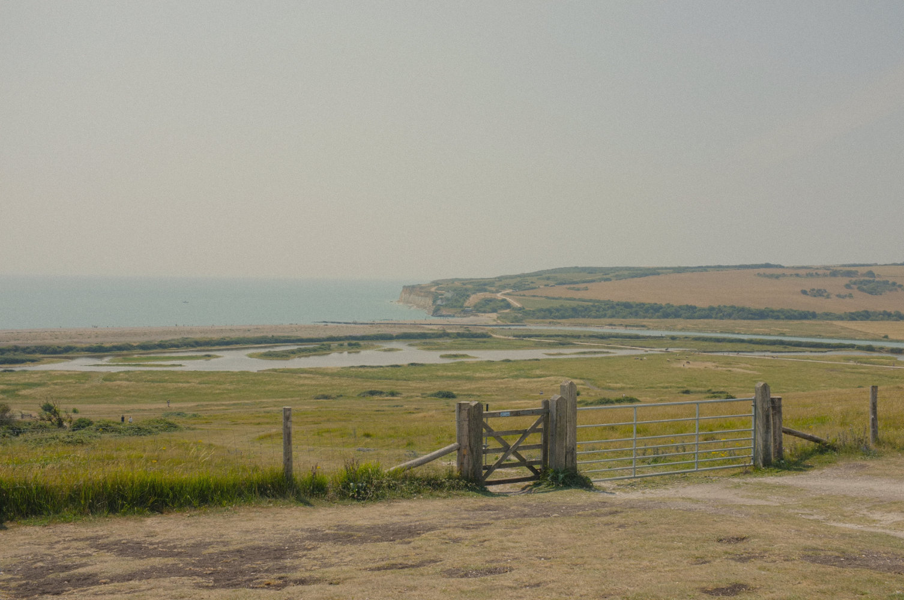
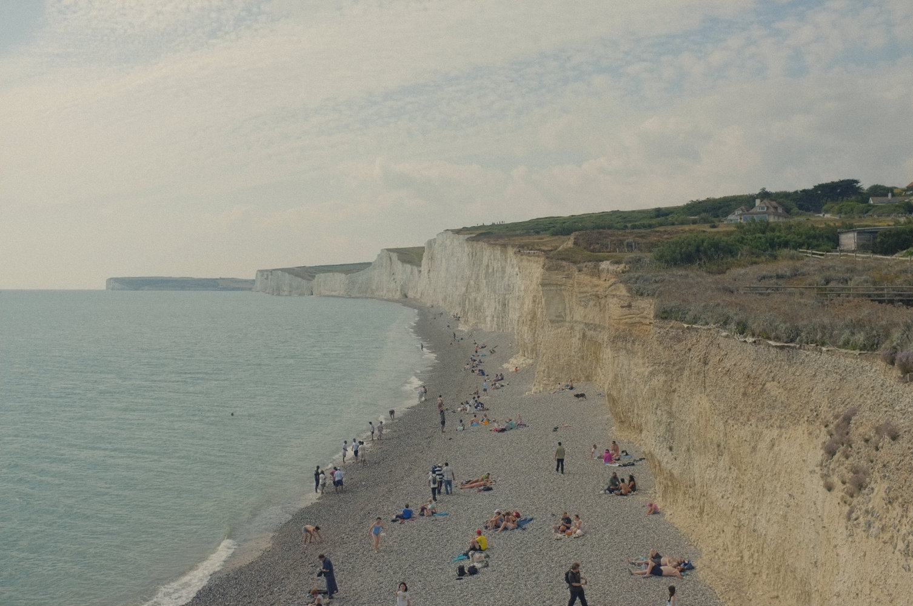

The trip started with a Friday evening train to Lewes from London. There were two hours of light after this journey to try and get nicely on route and into an area suitably remote to camp - something identified as a challenge based on the landscape being very open with few good hiding places.
Leaving Lewes, the South Downs Way was met near Ilford. It was a beautiful route getting out into ‘proper’ countryside relatively quickly. The evening sun was starting to get good and really helping the barley fields glow, which would be a key feature of the whole trip. One big steep slope onto the ridge and that was most of the exertion for the evening. Once on top it was a gentle cruise with the odd finger-pointing excitement when a train went past or a little skylark joined for a sing-song.

After nine, it was getting properly dark, and with field options depleting, the decision was made to camp along a hedge row in a freshly combined field. While not exactly discrete in location, the only people encountered since leaving Lewes were two lovely teens on a motorbike joy ride. The camp pitch however turned out to be horrendous through positioning the tent so the door managed to see the hedge not the hills. No.1 guide of camping is also to not camp over stones, but at 2am mid painful sleep, it came out that my bones were being slowly eroded by intense rock-to-body contact.
Waking up properly was surprisingly easy, 5am alarm and 5:15am pack down. Having finished off breakfast flapjack (sadly no picture to be found), a farmer appeared with his Defender and two dogs. Luckily all that was visible was a happy flapjack enjoyer stood slightly too far from the path. The discrete camp, while cutting it very fine, was ultimately successful.
Properly getting a move on at 5:45, Southease was quickly arrived at, taking a moment to look at the church with its 11th-century round-tower. Also noting the station for future trips, it was then up Itford Hill before a nice long, easy saunter along the ridge into Alfriston. During this saunter, there were numerous tumuli and long barrows which added a few nice little lumps of wonder and presented the obvious hope of being a little boy who stumbles upon some long-lost treasure. Sadly, nothing was found other than a curiously large group of paragliders who seemed to be having an all-round good time, with the exception of one chap who was doing some form of experimental dance on the ground with his kite.

Reaching Alfriston everything went a bit silly as this was meant to be the stop for night two but it was also just after 10 in the morning so definitely not bedtime. Instead of being normal and taking time to explore the village, sit on the green, and have a little sunbathe, it rather seemed natural to continue on to Eastbourne. This was meant to be the whole of Sunday’s walk. Continuing was definitely a great idea for a long time, until it wasn’t. Tiredness was beginning to appear about an hour out of Alfriston, walking past Litlington White Horse and actual white horses, but it was blamed on low fuel and expected to be resolved by copious amounts of dry roasted peanuts. Upon finally reaching the coast it transpired that peanuts cannot resolve the ailments of overworked legs.
Arriving at Seven Sisters, it was undeniably beautiful. The welcome centre brought lots of people who looked to be having a nice, normal time and made me look rather moronic with a heavy pack and no flip-flops. Walking over to speak to the sisters, the view really did get good and it was a lovely walk along the cliff. Moam’s Pin Balls (not paid product placement) were the reward for reaching the top of each sister, but ultimately the sisters were mean and nasty to all ten of my tired toes. Arriving at the National Trust cafe at Birling Gap, rather than having a Solero or mr whippy, a 4pm pasty was needed to stop me nodding off.


Post-pasty stop, the final saunter onto Eastbourne was met with indecision as to whether to have this as the 2-night/3-day trip that was planned or if to continue back on the train that evening. After a toe dip in the sea, the train was had since the notion of waiting around till dark again didn’t appeal. A bit of a disappointing end to an otherwise 10/10 weekend. In some ways it slightly became a bank holiday weekend because Saturday’s (on Saturday) and Sunday’s (on Saturday) plans did happen and now there was a whole fresh Monday (actually Sunday) to frolic about with.